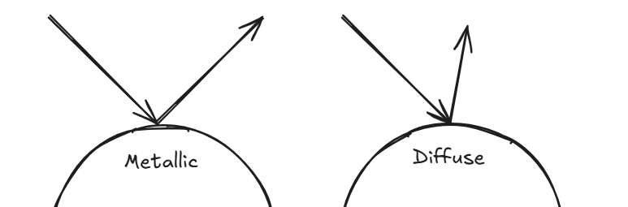
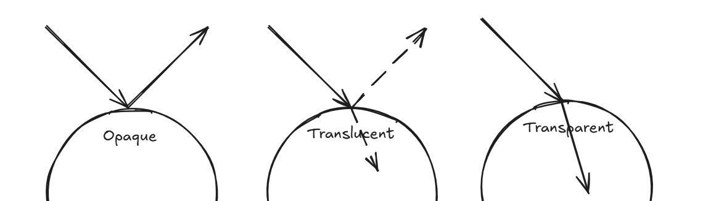
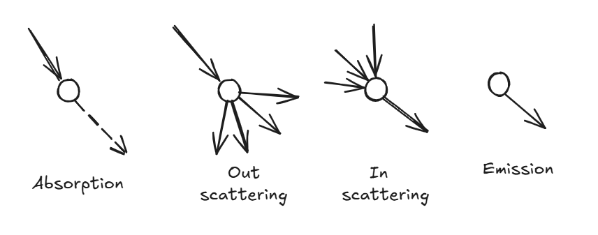

Rendering
Rendering in computer graphics is the process of transforming a 3D world—much like the one we live in—into a 2D image that appears on a screen from a particular viewpoint.
It involves an enormous number of mathematical operations running in parallel to determine how every surface interacts with light and perspective. This is where
GPUs shine: they are built to handle thousands of these computations simultaneously. Their ability to perform these calculations at incredible speed is what makes
real-time rendering possible in modern video games and simulations.
Broadly speaking, there are two main classes of rendering algorithms:
Rasterization and
Ray Tracing. Since this blog focuses on understanding how NeRFs work,
we’ll primarily explore Ray Tracing. It’s a technique that feels intuitive—rooted in our geometric understanding of how light travels and interacts with objects,
without diving into the particle-versus-wave shenanigans.
In the physical world, we perceive objects through the light rays that bounce off their surfaces and enter our eyes. These rays originate from sources like the Sun or a
light bulb, and the way an object reflects them determines how we see it. For instance, a metallic surface reflects light perfectly—its angle of reflection mirrors the
angle of incidence—creating a sharp, mirror-like appearance. In contrast, a rough or diffuse surface scatters light in many directions, giving it a soft, matte look.
The proportion of light that’s reflected versus transmitted also shapes how an object appears: if most light is reflected, the object looks opaque; if it’s partly
reflected and partly refracted, it appears translucent; and if most light passes through, it becomes transparent.


With this understanding, we can now engineer a method to render an image. Given a light source, an object, and a camera placed at a specific position, the most
straightforward idea is to shoot rays from the light source, observe how they interact with the object’s surface based on its material properties—how they reflect,
refract, or scatter—and finally collect the rays that end up reaching the camera.
In theory, this approach works beautifully and produces highly realistic renderings. But in practice, it’s computationally expensive. Tracing every possible ray from
the light source—and accounting for all their reflections and refractions—is simply too heavy to compute, and we have no easy way of knowing how many rays to sample
in the first place.
Here’s where a clever trick comes in: since we only care about the rays that actually reach the camera, we can reverse the process. Instead of shooting rays from the
light source, we cast them from the camera into the scene and track how they interact with objects. This inversion drastically reduces the number of computations
while achieving the same visual effect.
When we want to render something we are just coloring a bunch of pixels on the screen at the end of the day. That is what pixels are for. Each pixel is a unit that
shows the color visible to the human eye. The color is represented by the RGB value of a pixel. Every unique proportion of RGB gives a unique color with each channel's
value being an integer from 0 to 255 (8bit).
When we set out to render an image of a 3D model, we build upon this understanding of light and pixels. Instead of firing countless rays from the light source, we start
right where it matters — the camera. From the camera’s origin, we cast rays that travel through the center of each pixel on the image plane (one such ray is shown below).
Each ray is extended into the scene until it intersects an object. Once that happens, the color of the object at the intersection point determines the color of that pixel.
To make the rendering more realistic, we apply basic physics based on the material properties of the surface it hits. If the object is metallic, we reflect the ray and use
the color from wherever it bounces next. If it’s transparent, we refract the ray and use the color of what lies beyond. And so on — the principle remains the same. Each
ray tells a tiny story of light’s journey through the scene, and together, they paint the final image we see (Sorry to cringe you out!).
If we view an environment in the global frame, the camera position can be represented as a vector \( \vec{o} \) and vector \( \vec{d} \) pointing from the camera origin to a
given pixel representing the direction of the ray. So we can mathematically represent a ray as the vector sum of origin position and the direction vector scaled up to any value (\(t \in \mathbb{R}\))
$$ \vec{r} = \vec{o} + t \vec{d}$$
If you want gain deeper knowledge on ray tracing and would enjoy building your own ray tracer I would suggest checking out
Ray Tracing in One weekend
Any rendering algorithm that relies on shooting rays from pixels and coloring them based on their interactions with the scene falls under the broad class of ray tracing methods. Among these,
one particularly interesting variant is volume ray casting. This technique becomes extremely useful when the environment we wish to render isn’t made up of solid surfaces, but rather a
volumetric field — think of fog, smoke, clouds, or translucent materials — where particles (or the medium) continuously interact with light. A light ray traveling through such a
medium can interact with it in four fundamental ways:
- Absorption: The ray loses intensity as light energy is absorbed by the medium.
- Out-scattering: Light is deflected away from the original path.
- In-scattering: Multiple rays are redirected into the ray’s direction, adding brightness.
- Emission: The medium itself emits light from certain regions.
All these interactions collectively influence the intensity of the light as it travels, and this behavior is beautifully captured by a simple but powerful relation known as the Beer–Lambert Law:
$$ \frac{dI(s)}{ds} = -\sigma I(s) $$

This equation describes how the intensity \( I(s) \) of a light ray changes as it moves along a path \( s \) through a medium. The parameter \(\sigma\) — often called the optical density —
encapsulates the properties of the medium: how much light is absorbed, scattered, or emitted at a given location. Assuming \(\sigma \) is constant, the equation can be solved to give:
$$ \frac{I(s)}{I(0)} = e^{-\sigma s} $$
The ratio above is called transmittance — it represents the fraction of light that successfully passes through the medium without being absorbed or scattered. The above equation is fine as long as
the medium is homogeneous i.e. the \(\sigma\) value stays constant. But if we were to deal with hetergenous media (which would be the most common scenario), we have to consider the change in the optical
density. So the equation becomes
$$ T(s) = \frac{I(s)}{I(0)} = \exp(-\int_0^s \sigma(z)dz) $$
In essence, the farther a light ray travels through a dense medium, the dimmer it becomes, following an exponential decay. Now, when rendering a volumetric medium, we follow the same ray-shooting idea, but
instead of finding a single intersection point, we accumulate the light contributions from all points the ray encounters along its path. This becomes an integration of all the transmittance at every given
point in space
$$ I_o = \int_{0}^{\infty}T(s)\sigma(s)I(s)ds $$
I have written the rendering equation in a very simplified manner. To read more on the topic of volume rendering check out this
blog. Below I give the equation in its real form and the image
of the man -
James Kajiya who came up with it
$$ L_o(\mathbf{x}, \omega_0, \lambda, t) = L_e(\mathbf{x}, \omega_0, \lambda, t) + \int_{\Omega}f_r(\mathbf{x}, \omega_i, \omega_o, \lambda, t)L_i(\mathbf{x}, \omega_0, \lambda, t)(\omega_i \cdot \mathbf{n})d\omega_i $$


Comments